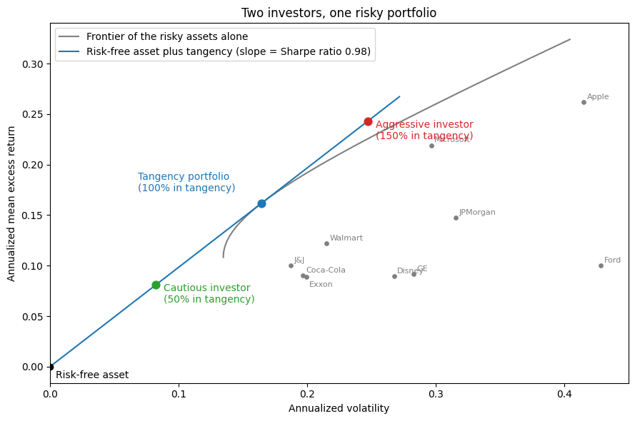
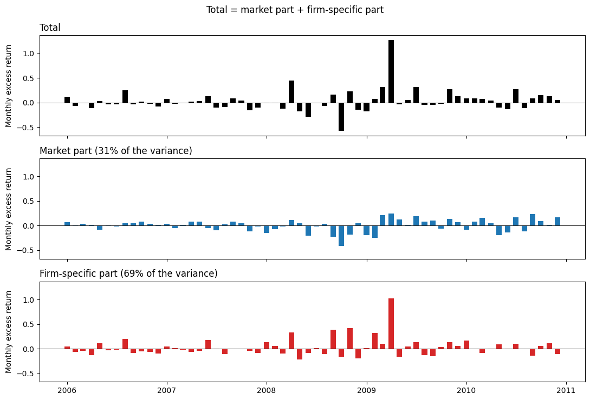
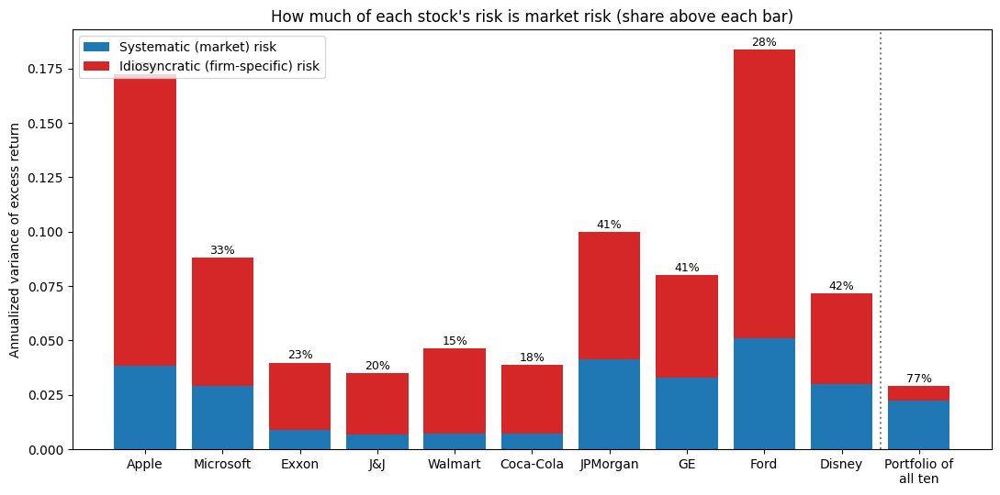
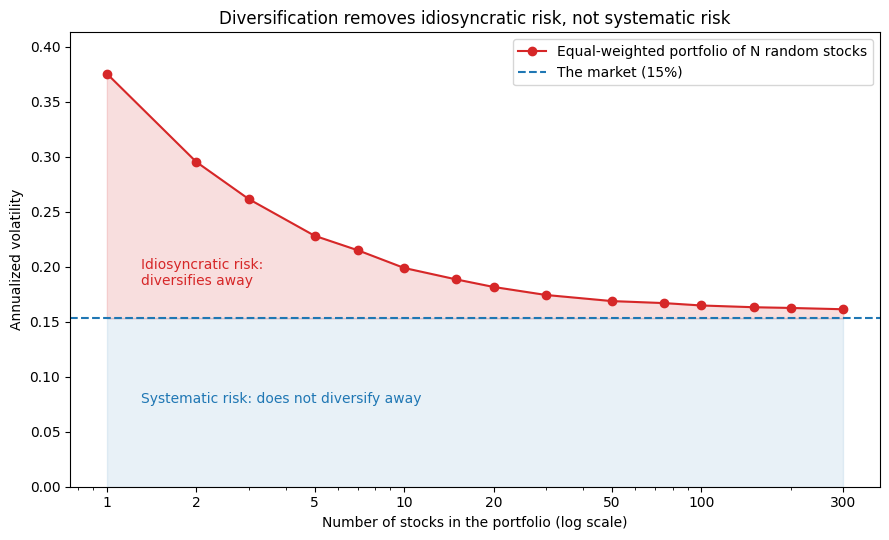
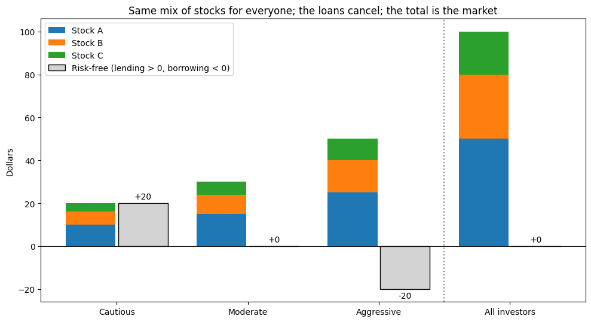
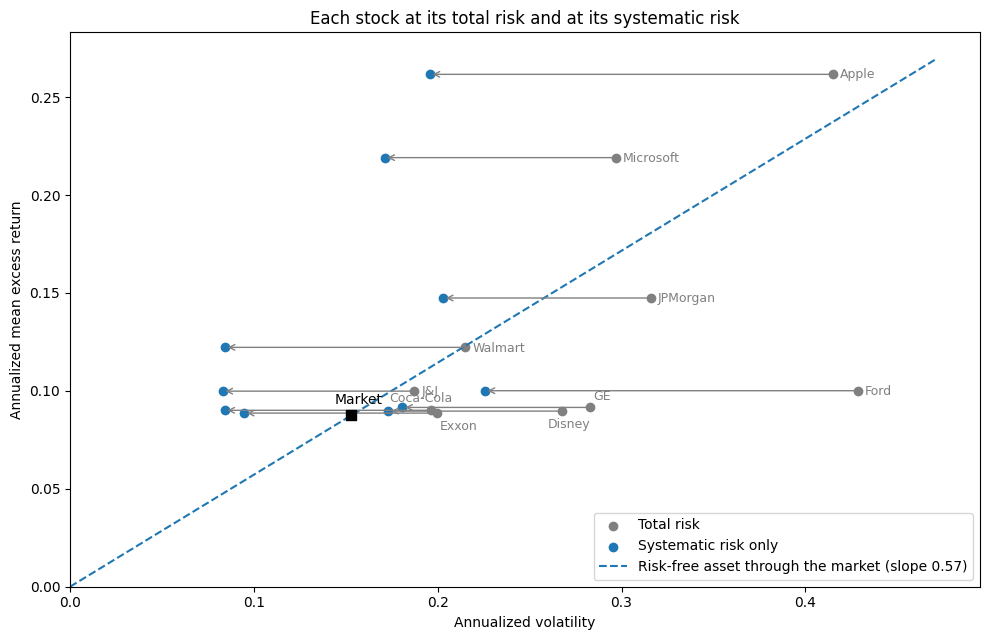
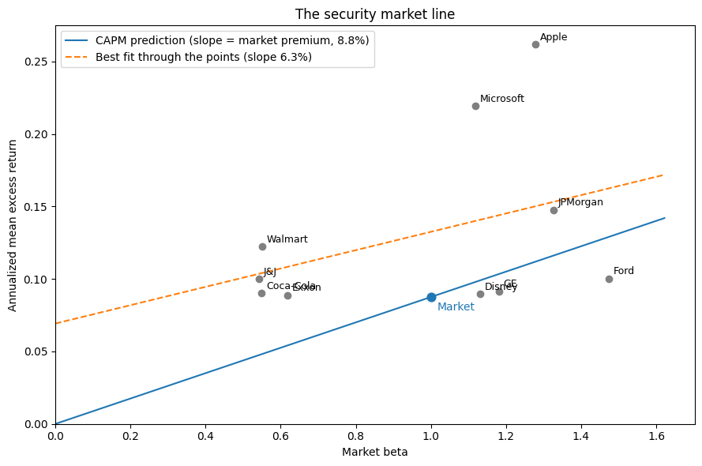

From Mean-Variance to the CAPM#
In HW 0 you solved one investor’s portfolio problem. This page asks what happens when every investor solves it. The answer is the Capital Asset Pricing Model (CAPM), the theory behind the market index you build in HW 1. It gives statements and intuition only. Each step links to the paper where the result is proved.
The figures use ten well-known stocks from CRSP (Apple, Microsoft, Exxon,
J&J, Walmart, Coca-Cola, JPMorgan, GE, Ford, and Disney), monthly from 1990
through 2024. They were picked with hindsight from among today’s best-known
companies, so their average returns are higher than a typical stock’s. That
does not matter for pictures about risk, but it means these figures are not
a test of anything. The calculations are in
src/calc_asset_pricing_theory.py.
Step 1: One investor holds the tangency portfolio#
The tangency portfolio is the portfolio of risky assets with the highest Sharpe ratio. From HW 0, its weights are
Statement (Tobin separation). When there is a risk-free asset, every mean-variance investor holds the same risky portfolio, the tangency portfolio. Risk aversion only decides how wealth is split between the tangency portfolio and the risk-free asset.
Intuition. Mixing the risk-free asset with a risky portfolio traces a straight line that starts at \(r_f\), and its slope is that portfolio’s Sharpe ratio. Every investor wants the steepest line, whatever point on it they pick. A cautious investor lends part of their wealth at \(r_f\), and an aggressive one borrows to hold more than 100% in the tangency portfolio. Both hold the same mix of risky assets.
In the figure, the gray curve is the frontier of the ten stocks alone. The blue line is the steepest line from the risk-free asset that still touches it, and it touches at the tangency portfolio. The two investors sit on that line, one below the tangency point and one above.

The HW 0 appendix proves the general two-fund theorem: without a risk-free asset, every frontier portfolio mixes the same two funds (Merton 1972). Tobin separation is the special case where one of the two funds is the risk-free asset. Paper: Tobin (1958).
Step 2: Two kinds of risk#
Definition. Regress a stock’s excess return on the market’s excess return. This is the market model of Sharpe (1963):
The first part, \(\beta_i (R_M - r_f)\), is the systematic part of the return. It moves with the whole market. The rest, \(\varepsilon_i\), is the idiosyncratic part, which comes from news about the firm itself. The two parts are uncorrelated, so the variance splits in two:
The figure splits Ford’s monthly return from 2006 through 2010 into the two parts. The market part is mostly the 2008 crash, which hit every stock. The firm-specific part is Ford’s own story: the near-bankruptcy of the U.S. auto industry, then April 2009, when Ford rose 127% while its market part accounted for 25 points of that.

For most single stocks, idiosyncratic risk is most of the risk. For these ten, the market explains between 15% (Walmart) and 42% (Disney) of the variance. Put all ten in one equal-weighted portfolio, and the market explains 77%.

Statement (diversification). In a portfolio of many stocks, the idiosyncratic parts largely cancel and the systematic part remains. In an equal-weighted portfolio of \(N\) stocks, the idiosyncratic variance shrinks roughly like \(1/N\), and the systematic variance stays near the market’s.
Intuition. Firm-specific news is good for some firms and bad for others, so across many firms it averages out. Market-wide news hits all of them at once, so averaging cannot remove it.
The figure draws \(N\) stocks at random from every CRSP stock with a full return history since 1990, 200 times for each \(N\), and reports the average volatility of the equal-weighted portfolio. One stock has a volatility of 38% a year, ten have 20%, and a hundred have 17%, close to the market’s 15%. Past a few dozen stocks, adding more barely helps, because what is left is systematic risk. Paper: Evans and Archer (1968).

This is why the single stocks sit far to the right of the frontier in the Step 1 figure: each carries idiosyncratic risk that a portfolio can shed. Mean-variance optimization is diversification done optimally. For each level of expected return, it sheds as much of that risk as it can.
Step 3: The assumptions#
To go from one investor to a market, the CAPM assumes:
Every investor is a mean-variance optimizer with a one-period horizon.
Investors agree on \(\mu\) and \(\Sigma\) (homogeneous beliefs).
Anyone can borrow or lend any amount at \(r_f\). There are no taxes or trading costs, and no investor is big enough to move prices.
Risky assets are in positive net supply. They are the shares that exist, and their total value is the market capitalization.
The risk-free asset is in zero net supply. It is a loan between investors, so every dollar lent is a dollar borrowed.
Step 4: Supply equals demand, so the market is the tangency portfolio#
Statement. In equilibrium, the market portfolio, which holds every risky asset in proportion to its market value, is the tangency portfolio.
Intuition. By Step 1, every investor’s risky holdings are the same portfolio at different sizes. Add them up, and total demand for risky assets is the tangency portfolio, scaled up. Supply is the shares outstanding, which is the market portfolio. Prices adjust until demand equals supply, and at those prices the market is the tangency portfolio.
The figure shows a made-up economy with three stocks and three investors. Each investor’s stocks come in the same 50/30/20 mix; only the amount differs. The cautious investor lends $20, the aggressive investor borrows $20, and the moderate investor does neither. Add everyone up and the stocks are the market, while the risk-free positions sum to zero.

Because the risk-free asset is in zero net supply, borrowing and lending cancel. Investors as a whole hold none of it, and all wealth sits in the market portfolio. That fixes how large the market risk premium has to be: large enough that the average investor is willing to hold exactly the market, no more and no less.
where \(\bar\gamma\) is investors’ average risk aversion. The premium is larger when investors are more risk averse or when the market is riskier.
Step 5: The CAPM#
Statement (Sharpe 1964, Lintner 1965, Mossin 1966). Every asset’s expected excess return is proportional to its beta with the market:
Intuition. Someone who holds the market cares only about the risk of the whole portfolio. An asset adds to that risk through its covariance with the market, not through its own variance. The rest of its risk, the idiosyncratic part, diversifies away, so it earns no reward. Because the market is already optimal, changing any asset’s weight cannot raise the Sharpe ratio. That only holds if every asset pays the same reward per unit of market risk it adds, and beta is that unit.
Only systematic risk is priced. Since \(\beta_i \sigma_M\) is the systematic part of the stock’s volatility, the CAPM can be rewritten as
Each unit of systematic volatility earns the market’s Sharpe ratio. Idiosyncratic volatility earns nothing.
Intuition. Anyone can get rid of idiosyncratic risk for free by holding a diversified portfolio, and in equilibrium everyone does, because they all hold the market. No one has to be paid to bear a risk they can shed for free. Systematic risk is different. It is the risk of the market portfolio itself, someone has to hold it, and so it has to be paid.
In the figure, each gray dot is a stock at its total volatility. The arrow removes the idiosyncratic risk and moves the stock to its systematic volatility \(\beta_i \sigma_M\), the blue dot. The dashed line runs from the risk-free asset through the market, and its slope is the market’s Sharpe ratio. The CAPM says that the blue dots lie on that line, not the gray ones: a stock’s reward depends on its systematic risk, however much total risk it has. Ford and Walmart illustrate this. Ford has twice Walmart’s total volatility, yet it earned less.

In these data, the blue dots do not land exactly on the line, and Apple and Microsoft are far above it. That gap is alpha, the subject of Step 6. Volatilities don’t add (only variances do), so an arrow’s length is not the idiosyncratic volatility itself. It shows how far the stock moves once that risk is gone.
Plotted against beta, the CAPM is a straight line, the security market line. It starts at zero (the risk-free asset has a beta of zero) and passes through the market at a beta of one. Its slope is the market risk premium. It is the figure above with beta, rather than \(\beta_i \sigma_M\), on the horizontal axis.
Step 6: What the CAPM predicts#
Regress any portfolio’s excess return on the market’s excess return:
The CAPM says \(\alpha_i = 0\) for every asset: every asset sits on the security market line, and its alpha is its vertical distance from the line. This is the same statement as “the market is the tangency portfolio.” A nonzero alpha means some mix of the market and portfolio \(i\) has a higher Sharpe ratio than the market alone (Gibbons, Ross, and Shanken 1989).
The figure plots the ten stocks. The blue line is what the CAPM predicts. The dashed line is the straight line that fits the stocks best.

In HW 1 you build the market index. Next week, HW 1 Guide E runs the alpha test on the portfolios your pipeline builds, and From the CAPM to Multifactor Models explains why more than one factor might be needed.
Discussion
The CAPM rests on the assumptions in Step 3. Which are hardest to believe, and what goes wrong when they fail?
Some answers that could come up:
The market portfolio cannot be observed (Roll 1977). In theory it contains every risky asset: stocks, bonds, real estate, private businesses, even human capital. The CRSP value-weighted index is a stand-in. A test that rejects the CAPM may only show that the stand-in is not efficient, which is why Roll argues the theory cannot really be tested.
Investors disagree. If beliefs differ, there is no single tangency portfolio for everyone to hold.
Borrowing is neither free nor unlimited. Investors who cannot borrow get leverage by buying high-beta stocks instead, which pushes up their prices and flattens the relationship between beta and return (Black 1972; Frazzini and Pedersen 2014).
The data agree. The relationship between average returns and beta is flatter than the CAPM predicts (Black, Jensen, and Scholes 1972; Fama and French 1992). The dashed line in the figure above is an example.
One period. Real investors also care about what their opportunities will look like next year. Dropping this assumption leads to next week’s multifactor models.
Mean and variance only. Investors may also care about skewness and crash risk, which is the subject of HW 3.
References#
Black, Fischer. “Capital Market Equilibrium with Restricted Borrowing.” Journal of Business 45, no. 3 (1972): 444-455.
Black, Fischer, Michael C. Jensen, and Myron Scholes. “The Capital Asset Pricing Model: Some Empirical Tests.” In Studies in the Theory of Capital Markets, edited by Michael C. Jensen, 79-121. New York: Praeger, 1972.
Evans, John L., and Stephen H. Archer. “Diversification and the Reduction of Dispersion: An Empirical Analysis.” Journal of Finance 23, no. 5 (1968): 761-767.
Fama, Eugene F., and Kenneth R. French. “The Cross-Section of Expected Stock Returns.” Journal of Finance 47, no. 2 (1992): 427-465.
Frazzini, Andrea, and Lasse Heje Pedersen. “Betting Against Beta.” Journal of Financial Economics 111, no. 1 (2014): 1-25.
Gibbons, Michael R., Stephen A. Ross, and Jay Shanken. “A Test of the Efficiency of a Given Portfolio.” Econometrica 57, no. 5 (1989): 1121-1152.
Lintner, John. “The Valuation of Risk Assets and the Selection of Risky Investments in Stock Portfolios and Capital Budgets.” Review of Economics and Statistics 47, no. 1 (1965): 13-37.
Merton, Robert C. “An Analytic Derivation of the Efficient Portfolio Frontier.” Journal of Financial and Quantitative Analysis 7, no. 4 (1972): 1851-1872.
Mossin, Jan. “Equilibrium in a Capital Asset Market.” Econometrica 34, no. 4 (1966): 768-783.
Roll, Richard. “A Critique of the Asset Pricing Theory’s Tests Part I: On Past and Potential Testability of the Theory.” Journal of Financial Economics 4, no. 2 (1977): 129-176.
Sharpe, William F. “A Simplified Model for Portfolio Analysis.” Management Science 9, no. 2 (1963): 277-293.
Sharpe, William F. “Capital Asset Prices: A Theory of Market Equilibrium under Conditions of Risk.” Journal of Finance 19, no. 3 (1964): 425-442.
Tobin, James. “Liquidity Preference as Behavior Towards Risk.” Review of Economic Studies 25, no. 2 (1958): 65-86.